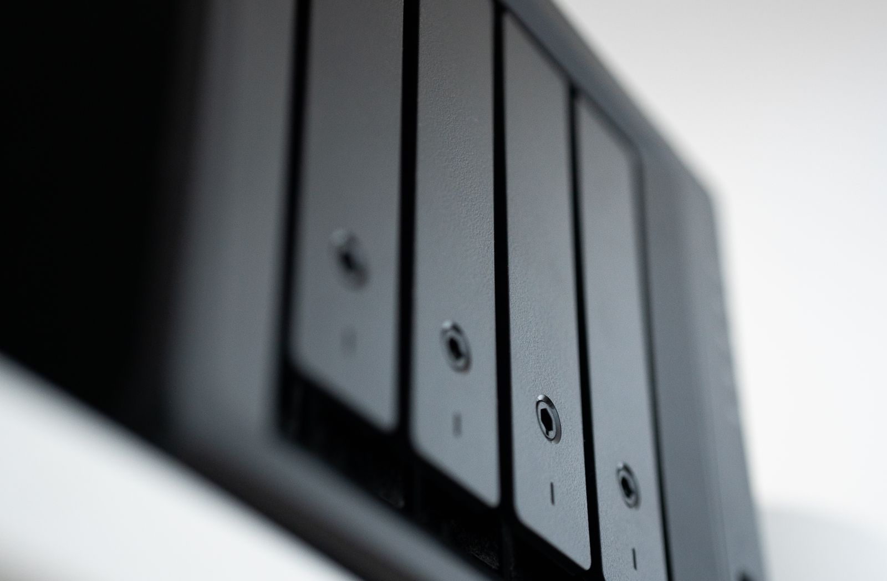

Une sauvegarde chez vous, sur une machine qui existe déjà.
Une TPE n'est pas trop petite pour être attaquée. Elle est surtout moins protégée. Nous assemblons dans notre atelier un serveur de sauvegarde à partir d'une tour reconditionnée (toutes fonctions testées, données effacées), avec des disques neufs garantis, et nous l'installons dans vos murs.
Depuis le 1er septembre 2026, toutes les entreprises reçoivent leurs factures sous forme électronique ; à partir du 1er septembre 2027, les PME et micro-entreprises devront aussi les émettre (calendrier impots.gouv.fr). Vos factures, vos devis, votre comptabilité, vos dossiers clients : tout devient fichier. Un rançongiciel, un disque qui lâche ou une mauvaise manipulation, et l'activité s'arrête.
La CNIL résume la bonne pratique en une règle, dite 3-2-1 : trois copies de vos données, sur deux supports différents, dont une hors ligne, déconnectée du réseau. Un serveur local dans vos murs couvre les deux premières et prépare la troisième. Il fait une copie automatique chaque jour, conserve des instantanés qui protègent contre le chiffrement par rançongiciel, et alimente un disque amovible que vous rangez ailleurs. Pas d'abonnement au volume stocké, pas de dépendance à la connexion internet pour restaurer.

Deux offres, un même serveur
Pour une TPE, un cabinet, une association ou un artisan qui a une personne référente pour tourner le disque hors ligne et regarder le rapport de sauvegarde.
- Serveur assemblé dans notre atelier à partir d'une tour professionnelle reconditionnée : processeur de 2015 ou plus récent, 8 à 16 Go de mémoire, ventilateur neuf, alimentation testée
- 2 × 4 To neufs en miroir, plus un disque hors ligne amovible
- Système libre (OpenMediaVault ou TrueNAS), copie automatique quotidienne, instantanés contre le chiffrement par rançongiciel
- Installation sur site, agents de sauvegarde sur vos postes, formation de la personne référente
- Consommation mesurée sur l'unité et inscrite sur la fiche (15 à 25 W au repos)
Pour une structure qui veut que quelqu'un surveille, mette à jour et teste la restauration à sa place, avec une copie hors site en plus.
- Tout ce que comprend l'offre Installé, même serveur, même fiche de consommation
- Supervision à distance, mises à jour de sécurité appliquées par nos soins
- Copie chiffrée hors site de 1 To incluse, hébergée dans l'Union européenne, chiffrée avant de quitter vos locaux
- Test de restauration trimestriel documenté, rapport mensuel
- Remplacement de l'unité sous 48 h ouvrées après votre signalement
Ce que la prolongation d'une tour évite
Le choix sobre n'est pas la machine neuve la moins gourmande. C'est la machine qui existe déjà. Pour un ordinateur fixe professionnel sans écran, la fabrication représente 79 % de l'empreinte carbone sur six ans d'usage, selon les données ADEME. Remettre une tour en service, c'est éviter l'essentiel de cette part. Les disques neufs et le ventilateur ont leur propre empreinte, que nous ne déduisons pas de ce chiffre. Et parce qu'un serveur de sauvegarde reste allumé, nous mesurons la consommation de chaque unité avant livraison et l'inscrivons sur sa fiche.
Ce que cette offre n'est pas
Ce n'est pas un stockage en ligne (« cloud »). Vos données restent sur une machine chez vous ; la copie chiffrée hors site de l'offre Managé est un filet de sécurité, pas un espace de travail accessible de partout. Ce n'est pas une garantie contre toute perte. Une sauvegarde réduit le risque, elle ne l'annule pas : un fichier chiffré avant la dernière copie, un disque hors ligne resté branché, une restauration jamais testée, et la protection tombe. Le disque hors ligne ne se tourne pas tout seul : c'est vous qui le débranchez, le rangez ailleurs et le rebranchez au rythme convenu à l'installation. Enfin, un serveur allumé consomme : 15 à 25 W au repos selon l'unité, mesurés et inscrits sur la fiche ; à 20 W en continu, cela représente environ 175 kWh par an.
Le cadre
- Un contrat écrit, qui décrit le matériel livré, les prestations, les délais et ce qui reste à votre charge, comme la rotation du disque hors ligne.
- Une obligation de moyens, pas de résultat : nous nous engageons sur les actions prévues au contrat (copies, instantanés, tests, supervision pour l'offre Managé), pas sur l'absence de toute perte.
- Une garantie de 2 ans sur le serveur assemblé, avec des disques neufs garantis.
- Des logiciels libres, sources fournies : le système et les outils de copie sont libres, et nous vous remettons les sources. Vous pouvez faire vivre la machine sans nous.
- Pour l'offre Managé, les données hébergées hors site sont chiffrées avant de quitter vos locaux, avec une clé que vous détenez. Sans cette clé, nous ne pouvons pas lire vos données ; sans cette clé, personne ne peut les restaurer. Gardez-la en lieu sûr, hors du serveur.